IES Valle del Alberche

📋 Enunciado
Partiendo de la definición de campo eléctrico creado por una carga puntual y de la linealidad de las ecuaciones de Maxwell en el vacío, demostrar que para un sistema de \( n \) cargas puntuales \( q_1, q_2, \ldots, q_n \), el campo eléctrico resultante en cualquier punto \( P \) del espacio es igual a la suma vectorial de los campos creados por cada carga individualmente:


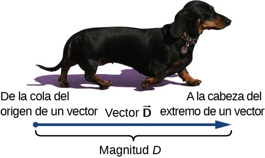

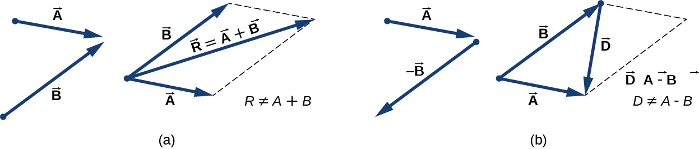

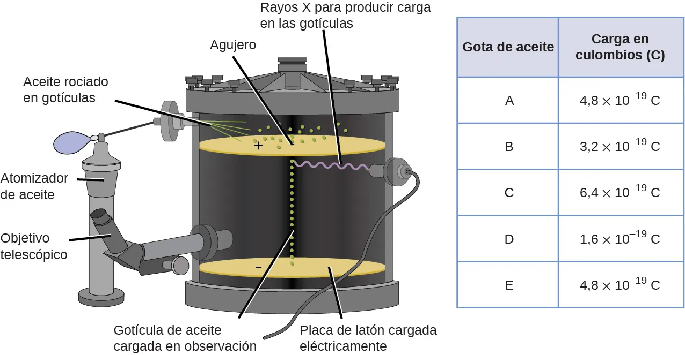
🎯 Objetivo
Justificar matemáticamente por qué los campos eléctricos se suman vectorialmente, permitiendo calcular el campo de distribuciones complejas de carga a partir del campo de cargas individuales. Este principio es fundamental para resolver problemas con múltiples cargas y constituye la base del cálculo de campos mediante integración para distribuciones continuas.


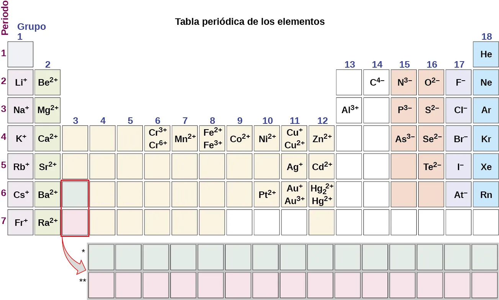
🔧 Procedimiento
donde \( \hat{u}_{r_i} \) es el vector unitario que apunta desde \( q_i \) hacia \( P \).
Esto es consecuencia directa de la linealidad de la ecuación de fuerza: la fuerza total es la suma vectorial de las fuerzas parciales.

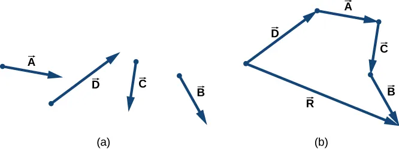
Cada cociente \( \frac{\vec{F}_i}{q_0} \) no es más que el campo \( \vec{E}_i \) creado por la carga \( q_i \). Por tanto:

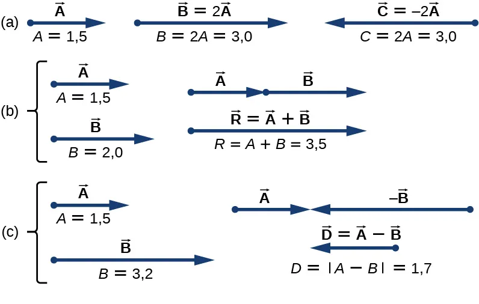
Este resultado demuestra que el campo total es la suma vectorial de los campos individuales, sin que la presencia de unas cargas modifique el campo creado por las otras (en el vacío).

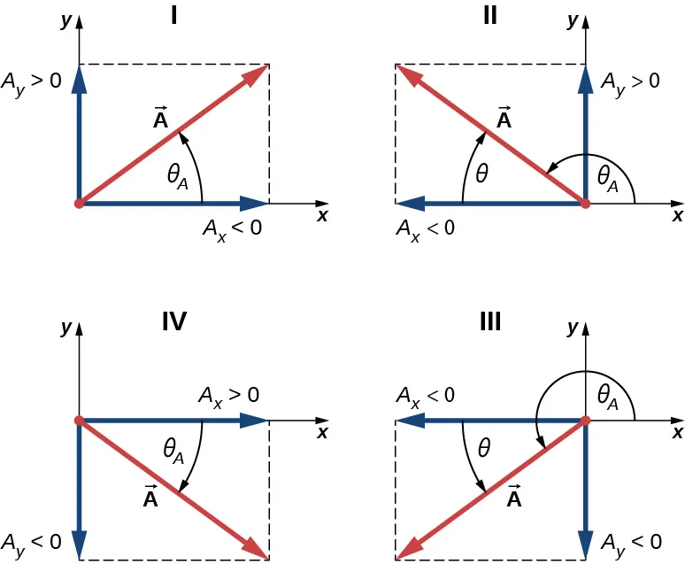

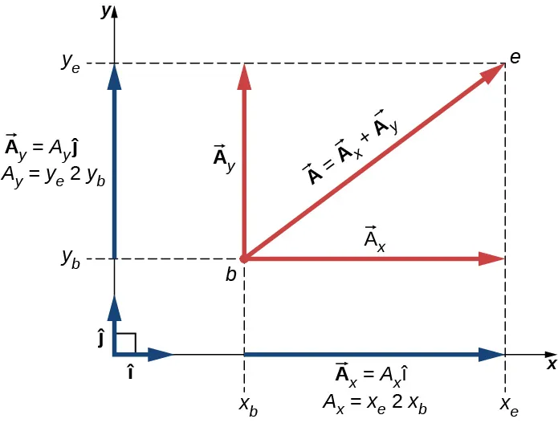
✅ Resultado
El campo eléctrico total en un punto debido a un sistema de cargas puntuales es la suma vectorial de los campos creados por cada carga individualmente. Este principio permite calcular el campo de distribuciones complejas a partir del campo de cargas simples.

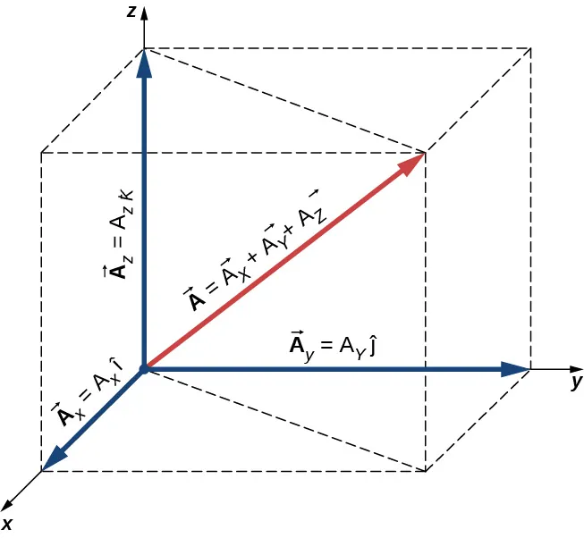

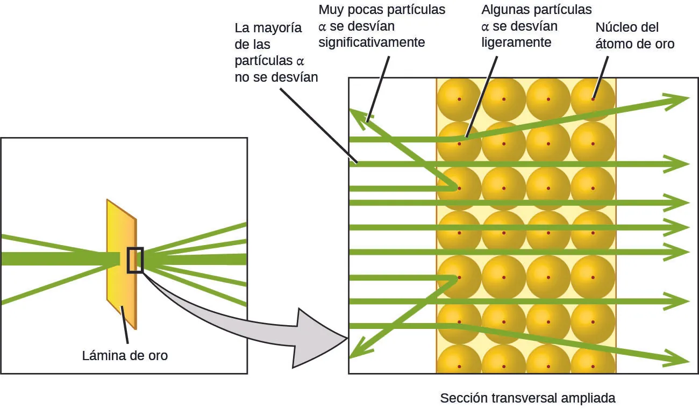
🧪 DESMITIFICANDO el Principio de Superposición 🖱️ Pulsame
Dos cargas puntuales se encuentran sobre el eje \( x \): \( q_1 = +5{,}0\,\mu\text{C} \) en \( x = 0 \), y \( q_2 = -2{,}0\,\mu\text{C} \) en \( x = 8{,}0\,\text{cm} \). Calcula el campo eléctrico total en el punto \( x = 4{,}0\,\text{cm} \).
Una carga \( q_1 = +3{,}0\,\mu\text{C} \) está en el origen, y otra \( q_2 = +4{,}0\,\mu\text{C} \) en el punto \( (0, 3{,}0\,\text{cm}) \). Calcula el campo eléctrico total en el punto \( (4{,}0\,\text{cm}, 0) \).

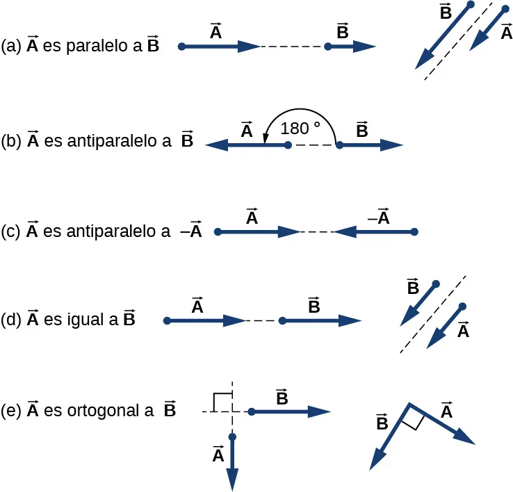
Dos cargas positivas \( q_1 = 1{,}0\,\mu\text{C} \) y \( q_2 = 9{,}0\,\mu\text{C} \) están separadas \( 40\,\text{cm} \). ¿En qué punto entre ellas el campo eléctrico total es nulo?
En el punto \( P = (0, 0) \) se coloca una carga \( q = -2{,}0\,\mu\text{C} \). En el punto \( A = (3{,}0\,\text{cm}, 0) \) hay una carga \( q_1 = +4{,}0\,\mu\text{C} \), y en \( B = (0, 4{,}0\,\text{cm}) \) hay otra \( q_2 = -6{,}0\,\mu\text{C} \). Calcula la fuerza neta sobre \( q \) en el origen.
Tres cargas iguales \( q = +2{,}0\,\mu\text{C} \) están en los vértices de un cuadrado de \( 10\,\text{cm} \) de lado (en \( (0,0) \), \( (0,10) \) y \( (10,0) \) en cm). Calcula el campo eléctrico en el cuarto vértice \( (10,10) \) cm.
Con un par de multiplicaciones y algo de práctica, esto es más fácil de lo que parece.
(Los detalles sobre lo que entra en las pruebas escritas se publicarán periódicamente en M.Teams).